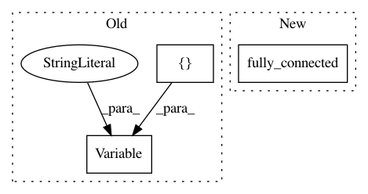

0a1844fe38592ba9797e37c920d6a9f745f217c0,async_knowledge_transfer.py,AsyncKnowledgeTransferLearner,build_networks,#AsyncKnowledgeTransferLearner#,197
Before Change
self.advantage = tf.placeholder(tf.float32, name="advantage")
W0 = tf.Variable(tf.random_normal([self.nO, self.config["n_hidden_units"]]) / np.sqrt(self.nO), name="W0")
b0 = tf.Variable(tf.zeros([self.config["n_hidden_units"]]), name="b0")
self.L1 = tf.tanh(tf.nn.xw_plus_b(self.states, W0, b0), name="L1")
self.knowledge_base = tf.Variable(tf.random_normal([self.config["n_hidden_units"], self.config["n_sparse_units"]]))
After Change
self.action_taken = tf.placeholder(tf.float32, name="action_taken")
self.advantage = tf.placeholder(tf.float32, name="advantage")
self.L1 = tf.contrib.layers.fully_connected(
inputs=self.states,
num_outputs=self.config["n_hidden_units"],
activation_fn=tf.tanh,
weights_initializer=tf.random_normal_initializer(),
biases_initializer=tf.zeros_initializer(),
scope="L1")
self.knowledge_base = tf.Variable(tf.random_normal([self.config["n_hidden_units"], self.config["n_sparse_units"]]), name="knowledge_base")
self.shared_vars = tf.get_collection(tf.GraphKeys.TRAINABLE_VARIABLES, scope="shared")
In pattern: SUPERPATTERN
Frequency: 3
Non-data size: 3
Instances
Project Name: arnomoonens/yarll
Commit Name: 0a1844fe38592ba9797e37c920d6a9f745f217c0
Time: 2017-03-30
Author: x-006@hotmail.com
File Name: async_knowledge_transfer.py
Class Name: AsyncKnowledgeTransferLearner
Method Name: build_networks
Project Name: arnomoonens/yarll
Commit Name: 7041289333eb7865e7c0494592c0c02afb53e7d2
Time: 2017-03-27
Author: x-006@hotmail.com
File Name: REINFORCE.py
Class Name: REINFORCELearnerDiscrete
Method Name: build_network_rnn
Project Name: tensorflow/models
Commit Name: 0f7616bdade868fc1dd8c90adb6f7789176305a6
Time: 2020-08-10
Author: 30733558+plakal@users.noreply.github.com
File Name: research/audioset/vggish/vggish_train_demo.py
Class Name:
Method Name: main